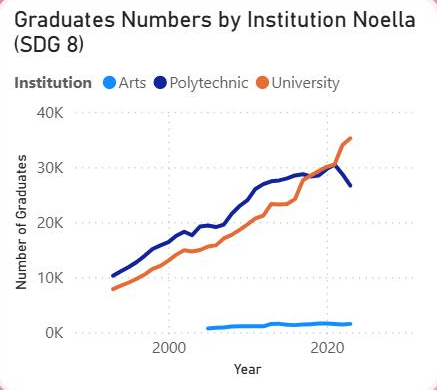
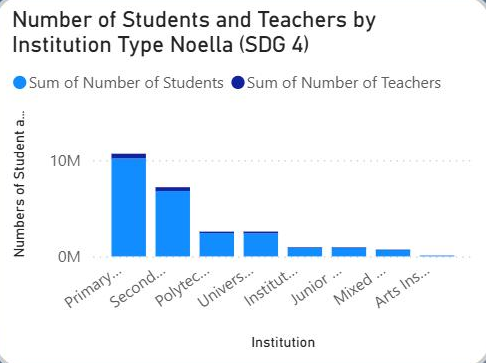

01
Project Overview
In this academic team project, we built two interactive Power BI dashboards that bring together five Singapore government datasets on education and graduate outcomes. Each dashboard is framed around a UN Sustainable Development Goal: SDG 4 (Quality Education) and SDG 8 (Decent Work and Economic Growth).
02
Analytical Questions
The dashboards were designed to help a viewer explore questions in two areas:
- Education quality (SDG 4): how student, teacher and graduate numbers compare across types of institution, and how education levels have changed over time.
- Graduate outcomes (SDG 8): how employment and salaries differ between institutions, and how they have moved over recent years.
03
Datasets
Five Singapore government datasets were used, covering education quality indicators, graduate employment statistics and graduate salaries.
04
Data Preparation
Because the data came from five separate sources, it had to be organised into a data model before it could be visualised together. Data modelling in Power BI allowed the datasets to be related to one another so that visuals on the same dashboard respond consistently to the same selections.
05
Dashboard Design
The work was split into two dashboards, each with a clear purpose:
SDG 4 · Education Quality and Institutional Performance
Students and teachers by institution type, growth of the teacher workforce, residents’ education levels over time, years of schooling by gender, and the top courses by number of graduates. A slicer filters by institution.
SDG 8 · Education and Graduate Outcomes
Full-time graduate employment rate, median salaries by institution and year, employment type by institution, graduate numbers by institution, and residents’ highest qualifications over time. A slicer filters by year (2018–2023).
Separating the two topics kept each view focused, while slicers let the viewer make their own comparisons.
assets/images/projects/ and replace this box with: <figure class="cs-figure"><div class="cs-figure__frame"><img src="../assets/images/projects/FILE.png" alt="DESCRIBE THE IMAGE" loading="lazy"></div><figcaption>CAPTION</figcaption></figure>06
My Visualisations
Each team member built charts for both dashboards. These are the two I created:


07
Insights
The main outcome of this project was making five separate datasets explorable in one place, so that institutional comparisons, employment outcomes and salary patterns could be read side by side instead of in separate tables.
08
Team & My Role
This was a team project. I built one chart for each dashboard (shown above) and contributed to the overall dashboard design.
09
Key Learnings
- The data model comes first. A dashboard is only as reliable as the relationships between the tables behind it.
- Less on each page is more. Giving each dashboard one clear purpose made it easier to read.
- Design for the question. Choosing a visual starts with what the viewer needs to compare.